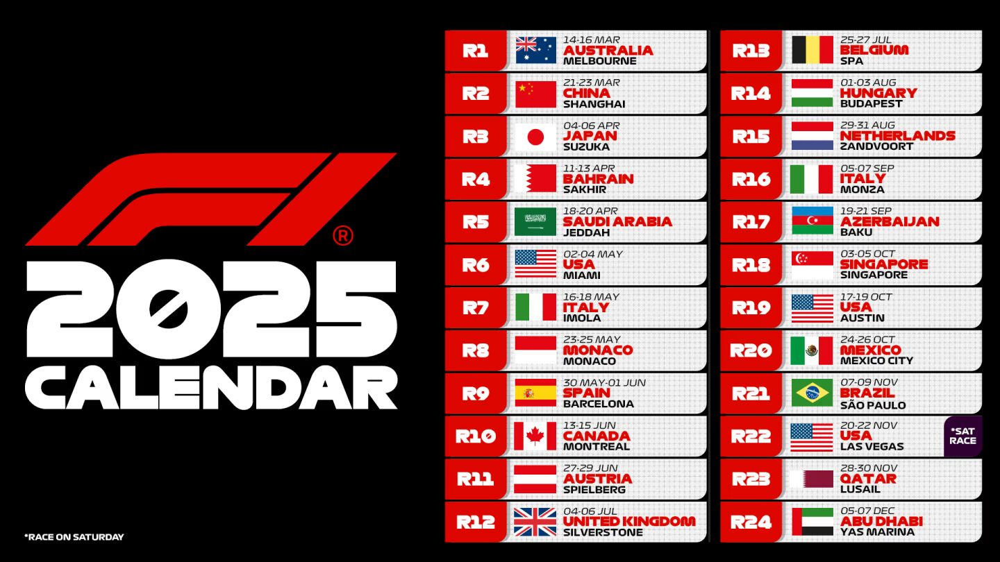

La temporada 2025 de Fórmula 1 avanza con gran emoción, y la próxima cita es el emblemático Gran Premio de Mónaco, que se celebrará del 23 al 25 de mayo en el histórico circuito urbano de Montecarlo.
Este año, el GP de Mónaco conmemora su 75º aniversario desde su debut en la F1, y se han introducido cambios significativos para mejorar el espectáculo en una pista conocida por su dificultad para adelantar. La FIA ha implementado una normativa que obliga a realizar al menos dos paradas en boxes y a utilizar un mínimo de tres juegos de neumáticos durante la carrera, con al menos dos compuestos diferentes en condiciones secas. Además, Pirelli ha reintroducido los neumáticos extrablandos (C4, C5 y C6) para este evento.
En cuanto a las condiciones meteorológicas, se espera un fin de semana mayormente soleado, aunque existe una probabilidad moderada de lluvia durante la sesión de clasificación del sábado. El domingo, día de la carrera, se prevé tiempo seco con temperaturas en pista que podrían alcanzar los 44 °C, lo que añadirá un desafío adicional para los equipos y pilotos.
El Gran Premio de Mónaco es una de las carreras más prestigiosas del calendario de la F1, y este año promete ser especialmente emocionante con las nuevas regulaciones y estrategias que los equipos deberán adoptar.